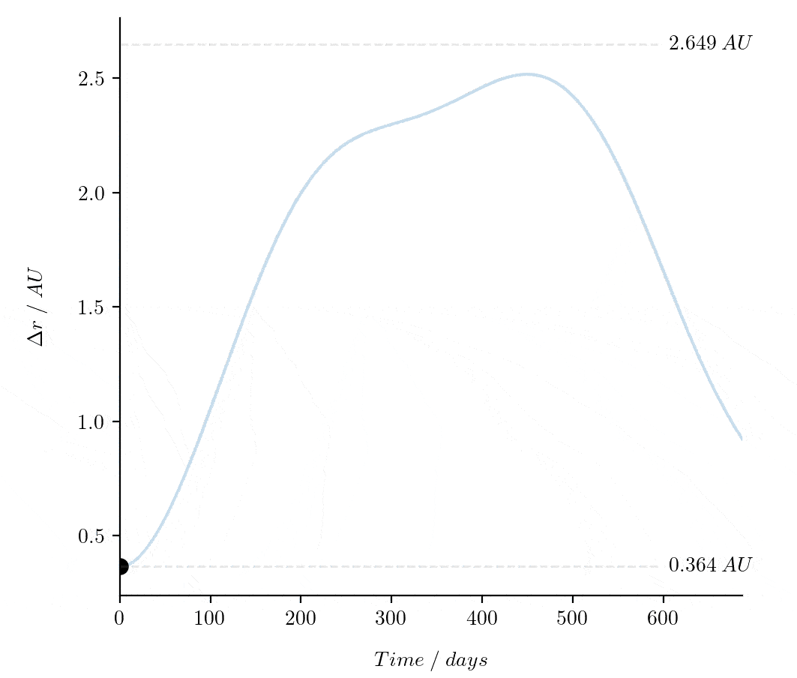

Autumn 2020
Challenge: How much older would you be if you stayed on Earth instead of travelling to Alpha Centauri at warp 5?
Archived
Past challenges are below!
Summer 2020
Challenge: Create a program to track sunspots across the face of the Sun automatically. You may use any python modules. I suggest using SunPy for retrieving images of the Sun. How can you use your tracking code to calculate the rotation period of the sun?

My attempt at this is in the AstPy-6 activity (no peeking!). I will be making a few changes that are nagging me over the summer before I post my solution.
June 2020
Challenge: Calculate the time between when a planet is at its closest to the Earth and when a planet is at its furthest from the Earth.

This gif shows the distance between the Earth and Mars over one orbit of Mars assuming they start at their closest approach. The maximum separation between the Earth and Mars is shown as 2.649 AU. How long will it take for the two planets to reach that maximum separation of 2.649 AU? You may use astropy's units module but no other astronomy related python package.
Contact - astrodimitrios(at)gmail.com
Copyright Dimitrios Theodorakis © 2020 · GNU GPL 3.0